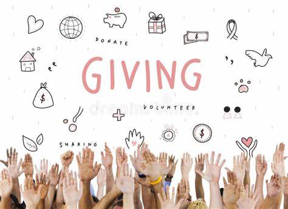

Six Degree Charity

What is Six Degree Charity About?
A charitable nonprofit organization aimed at bringing smiles to faces worldwide. We focus on rebuilding and providing essential services for a better life.
Our movement in a rural area.
We are a charitable organization that focuses on helping the less privileged.

Our organization made watersystem.
A mood that got our organization feeling happy. After so manny years witjout having watersystem, we made a great choice by sponsoring one water system.

To Donate CLICK HERE
Donation to others Orphanages
A caash gift to help build the and buy beds for the children.

What Is a Charitable Donation?

- A charitable donation is a gift of cash or property made to a nonprofit organization to help it accomplish its goals. In the U.S., these donations may be tax-deductible.
What is Our Organization About?
We are all about giving — we mean it. to young and old people
giving life a meaning and helping the world be a better place, healing the sadness
- We gather generous people and go to areas in need.
- We operate like a trust or foundation focused on charitable, religious, scientific, or educational purposes.
- We support civil defense volunteers and organizations through donations and services.
- We collaborate with different companies (e.g., Polanco, Unicef, King Charmer, and the W.H.O) to maximize impact.

Where We Go and What We Do
Mid-Wifes hospitals and we care for the children newly added to thworld
Hospitals
Orphanages
- Public Schools — providing scholarships and supplies
Ghetto and poor areas — building new infrastructures
Food distribution to the less privileged
- For the roof over our heads is needed, yet not all can get resources to have it, it is part of King Charmer goals to build free shelter for the people to live in and create new ways to help others be apart of his goals, from free shelter to owning a home
With the help of several medical schools and company, we are able to provide free helth care to people in need

We visit orphanages and provide them with food, clothes, and other essentials. We also help them with their education.
Building of free water supply and clean healthy drinking water to the poor areas which has no interligent mind and money to build infrastructure
Together with a team of generous people, we build hope...
Giving is our lifestyle and we continue to do so even to the hungry, we take food to struggling countries and feed the creature who are hungry and we do so with a happy heart.
Feeding and giving life a better feeling, a full stomach with good food inside gives you hope of a better world to come
Building housing shelters for homeless children
Contact us
Call Phone Number: +1 (913) 933 6342
Email Address: Kevinbeaconmanagement33@gmail.com
Donate from your Bitcoin App
wallet-address: ? email us
Click Here to Donate